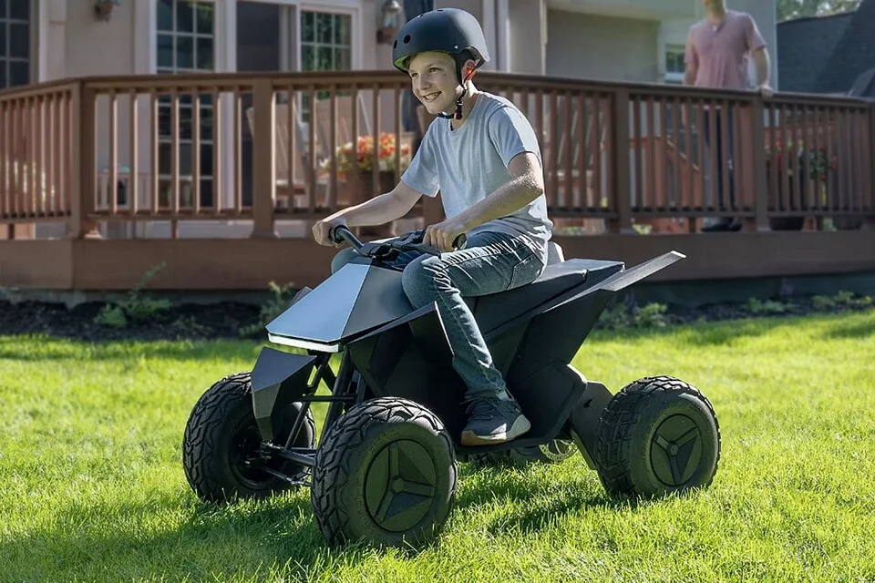
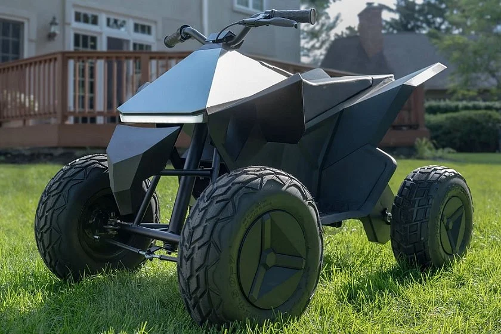
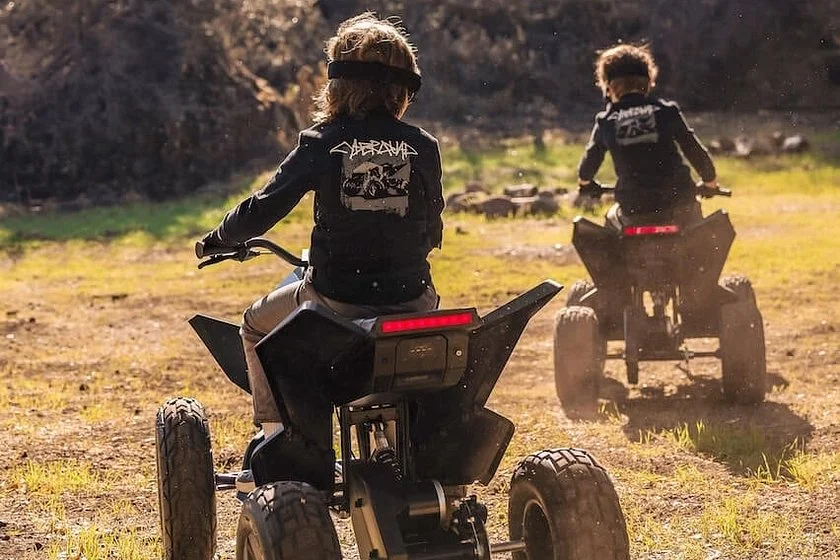

▲ 테슬라와 라디오플라이어가 함께 만드는 '사이버쿼드 포 키즈'. 사이버트럭을 그대로 축소한 듯한 각진 디자인이 특징이다 ⓒ Radio Flyer
1. 나올 때마다 완판되는 장난감
테슬라 온라인숍에서 파는 어린이용 전동 ATV '사이버쿼드 포 키즈'가 또 완판됐다. 이 제품은 재입고될 때마다 몇 시간 안에 품절되는 패턴을 여러 차례 반복해 왔다. 가격은 1,900달러, 원화로 약 250만 원 선이다.
사이버트럭을 그대로 축소한 듯한 각진 디자인에 테슬라 로고가 박혀 있어, 성인 팬들 사이에서도 소장 목적의 구매 문의가 이어진다. 하지만 이 제품에는 소소한 사연이 하나 있다. 지금 파는 모델은 사실 한 차례 리콜된 뒤 '자동차'가 아니라 '장난감'으로 다시 등록된 제품이라는 점이다.

▲ 마당에서 사이버쿼드 포 키즈를 타는 어린이. 대상 연령은 9~12세다 ⓒ Radio Flyer
2. 리콜 사유가 된 사고 한 건
2021년 12월 처음 출시된 초기 모델(914)은 약 5,000대가 팔린 뒤 2022년 10월 리콜됐다. 미국 소비자제품안전위원회(CPSC)가 밝힌 사유는 두 가지였다. 하나는 서스펜션과 최대 타이어 공기압 등 연방 청소년 ATV 안전기준을 충족하지 못했다는 것이고, 다른 하나는 실제 접수된 사고였다.
📍 리콜을 부른 사고
CPSC에 접수된 사고는 8세 아동과 36세 성인 여성이 함께 타다 차체가 기울어지면서 성인이 왼쪽 어깨에 멍이 든 사례다. 심각한 부상은 아니었지만, 이 제품이 '청소년용 ATV' 법적 분류에 해당하는 이상 연방 안전기준을 충족해야 한다는 점이 문제가 됐다. 결국 약 5,000대 전량이 리콜 대상에 올랐다.
3. 재출시 방법 — 차를 고치는 대신 서류를 바꿨다
테슬라와 라디오플라이어가 2023년 11월 다시 내놓은 모델915는 사고 부위를 보강하는 대신, 애초에 'ATV'로 분류되지 않는 쪽을 택했다. 핵심은 후륜 서스펜션을 아예 제거한 것이다. 스윙암 방식 현가장치가 사라지면서 차체는 오히려 '자동차'보다 '탈것형 장난감'에 가까워졌다.
여기에 완구 안전규격인 ASTM F963 인증을 새로 받고, 제품에는 "이것은 청소년 ATV가 아니라 탈것형 장난감입니다"라는 경고 라벨을 부착했다. 같은 크기, 같은 디자인, 같은 가격의 제품이 법적 분류만 바뀌면서 연방 청소년 ATV 안전기준 적용 대상에서 빠지게 된 것이다.
| 구분 | 모델914 (리콜) | 모델915 (현재) |
|---|---|---|
| 판매 시작 | 2021년 12월 | 2023년 11월 |
| 법적 분류 | 청소년 ATV | 탈것형 장난감 |
| 후륜 서스펜션 | 스윙암 방식 탑재 | 제거 |
| 인증 | 청소년 ATV 연방기준 미충족 | ASTM F963 완구 인증 |
| 가격 | 1,900달러 | 1,900달러(동일) |

▲ 뒷바퀴 쪽 서스펜션 구조가 단순해진 모델915. 이 변화가 법적 분류를 갈랐다 ⓒ Radio Flyer
4. 사양은 그대로다
분류만 바뀌었을 뿐 실제 성능은 크게 다르지 않다. 36V 리튬이온 배터리와 500W 모터를 얹었고, 최고속도는 저속·고속 전환 스위치로 시속 5~10마일(약 8~16km) 사이에서 조절할 수 있다. 1회 충전 주행거리는 최대 15마일(약 24km), 대상 연령은 9~12세로 상향 조정됐다.

▲ 나란히 타는 두 대의 사이버쿼드. 재입고 때마다 반복되는 완판 뒤에는 이런 수요가 있다 ⓒ autodaily
5. 정작 어른용은 7년째 안 나왔다
아이러니는 따로 있다. 사이버쿼드가 처음 세상에 나온 건 2019년 11월, 사이버트럭 공개 행사에서였다. 당시 테슬라는 사이버쿼드를 사이버트럭의 옵션 장비로 예고했고, 2020년 배터리 데이 행사에서는 성인용 프로토타입까지 투자자들에게 보여주며 "2021년 말 출시"를 약속했다.
하지만 실제로 시장에 나온 건 어린이용 축소판뿐이다. 성인용 사이버쿼드는 그 후로 별다른 진전 없이 7년째 정식 출시가 미뤄진 상태다. 반면 아이용 장난감은 리콜과 재출시를 거치고도 나올 때마다 완판되는, 사실상 더 확실한 흥행 기록을 쌓고 있다.
✅ 체크포인트
· 지금 파는 사이버쿼드는 법적으로 'ATV'가 아니라 '탈것형 장난감'이다
· 리콜의 직접 계기는 대형 사고가 아니라 성인 탑승자의 어깨 멍 1건이었다
· 가격은 리콜 전후로 1,900달러 그대로다
· 2019년 예고된 성인용 사이버쿼드는 아직 정식 출시되지 않았다
6. 정리
테슬라와 라디오플라이어의 사이버쿼드 포 키즈는 리콜을 계기로 후륜 서스펜션을 제거해 '청소년 ATV'가 아닌 '탈것형 장난감'으로 재분류됐고, 이 덕분에 연방 안전기준 적용을 피해 같은 가격, 같은 디자인으로 재출시됐다. 사양과 외형은 리콜 전과 크게 다르지 않지만 서류상 정체성이 바뀌면서 다시 팔릴 수 있게 된 사례다. 한편 2019년 예고됐던 성인용 사이버쿼드는 여전히 소식이 없어, 지금으로선 사이버트럭을 닮은 이 탈것을 탈 수 있는 건 9~12세 아이들뿐이다.